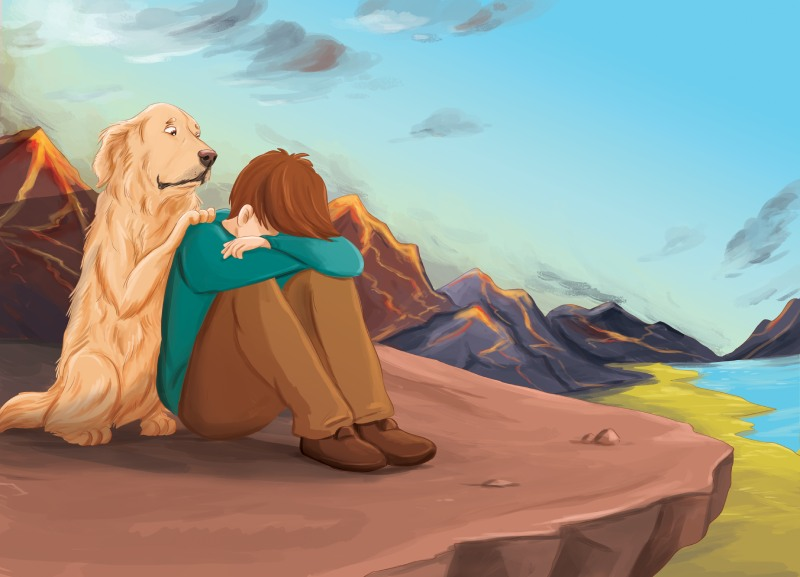

אדם ודייגו: הר כעס —
הנחיות להורים
איך עוזרים לילדים להתמודד טוב יותר עם כעסים וקשיי ויסות רגשי? מדריך קצר להורים על פי עקרונות ה־CBT.

"זה לא הוגן!"
אנחנו מצפים מהילדים לעצור את תגובת הכעס — אבל לא מלמדים אותם איך לעשות את זה.
הניסיון מלמד: כשמלמדים ילדים את הכלים המתאימים — התוצאות לא מאחרות לבוא.
למה אנחנו כועסים?
כמו שדייגו מלמד את אדם, כעס הוא רגש טבעי, כולם כועסים לפעמים. כעס הוא רגש בסיסי ואוניברסלי המתאפיין בתחושת עוינות, תסכול או תוקפנות כלפי מישהו או משהו שנתפס כמקור לכאב, איום או עוול.
כדי שנוכל להגן על הגבול שלנו שהופר, התגובה הגופנית שכולנו מרגישים כשאנחנו כועסים היא לגדול, להתנפח ולהגיב בתוקפנות. אנחנו הופכים, ממש כמו אדם, להר כעס.
המטרה שלנו: להפוך כעס הרסני לכעס אדפטיבי
מתפרצים בלי שליטה. הילד משלם מחיר כפול: נענש על ההתפרצות — והצורך הרגשי שבגללו כעס נדחק ולא נשמע.
מצליחים להסביר במילים מה פגע בנו ומה היה לא בסדר — ולקבל מענה לצורך הרגשי.
מכאן, המטרה שלנו כשאנחנו מלמדים שליטה בכעסים ובניית יכולת ויסות רגשי, אינה למחוק או לבטל את הכעס — אי אפשר למחוק רגשות. המטרה שלנו היא לעזור לילדים לעשות את המעבר מכעס הרסני לכעס אדפטיבי. כדי שזה יקרה, המיומנות הראשונה שאותה אנחנו רוצים ללמד ילדים היא היכולת לעצור.
”אחת המיומנויות החשובות ביותר שאנחנו יכולים להקנות לילדינו היא להחליט החלטות נכונות במצבים של מתח גבוה. אנחנו רוצים שהם יעצרו לפני שהם פועלים, ישקלו את התוצאות ואת ההשלכות, יביאו בחשבון את רגשות האחרים, יכריעו הכרעות מוסריות ואתיות.
— פרופ' דן סיגל
כעס על פי הגישה הקוגניטיבית־התנהגותית
מודל אפר"ת, הבסיס של התפיסה הקוגניטיבית, הוא כלי פשוט ויעיל להבין באמצעותו את הדינמיקה של מכלול הרגשות והתגובות שלנו — ובהמשך, לשנות אותה. השלב הקריטי אינו האירוע עצמו, אלא הפרשנות: הסיפור שהילד מספר לעצמו על מה שקרה. בספר, הפרשנות מופיעה בדמות דרקוני הכעס, והיא זו שמובילה במהירות לרגש — ומתוך הרגש, לתגובה.

הוגנות היא מושג מופשט, וילדים — בעיקר מתחת לגיל תשע — מתקשים לתפוס אותו. כשמסבירים שהוגנות פירושה לפעול בתוך מסגרת כללים ידועה ומוסכמת, ושואלים בדיעבד האם האירוע היה הוגן, רוב הילדים יסכימו שכן. כדאי לשאול גם לגבי הפעם הבאה, כדי לעזור להם להתמודד עם סיטואציות דומות בעתיד.
קודם כל — לעצור! ברקס
בזמן התפרצות אי אפשר לחשוב. קודם מכבים את הר הכעס עם מילת הקסם. בספר, אדם מוצא על גדת הנהר את שיני הדרקון — ודייגו מלמד אותו את סודן: אוחזים שן דרקון בכל כף יד, מכווצים את הידיים לשני אגרופים חזקים, ואומרים את מילת הקסם ברקס! האחיזה והכיווץ עוזרים לגוף לפרוק את המתח — ומחזירים את השליטה. רק כשרגועים אפשר לבחון מה קרה ולבחור אחרת — בעזרת פרוטוקול בן ארבעה שלבים.
טיפ להורים: בבית אפשר להחליף את שיני הדרקון בכל חפץ קטן שהילד בוחר — או פשוט בכיווץ האגרופים עצמו.
מקשיבים למה שהפריע — בלי להשתיק ובלי להתווכח. "אני רוצה להקשיב לכל מה שיש לך לומר, אבל אתה צריך להירגע כדי שאוכל להקשיב."
נותנים תוקף לרגש ולהיגיון הפנימי — לא להתנהגות. למשל: "אני יכול להבין את ההיגיון שלך, אני מבין שזה נורא מתסכל שכל הזמן אתה חווה...". ואם באמת היה משהו לא בסדר — אומרים לו שהוא צודק.
בודקים יחד: האם הפרשנות בהכרח נכונה? או שאולי הופיע דרקון כעס ושכנע אותך שקרה משהו אחר?
מה נעשה בפעם הבאה שיקרה משהו דומה? איך תעצור את הר הכעס ותספר לנו מה הפריע לך?
הורים, שימו לב
ילדים לומדים להגיב לכעס גם בחיקוי. איך אתם כועסים? נסו לתרגם למילים את התהליך: "כשאני ממש כועסת, אני...". וגם אתם מוזמנים להשתמש בברקס!
רעיונות לשיחה ולפעילות
שימו לב איך הילד מגיב — האם הוא מזדהה עם אדם? מביא דוגמאות מאירועים שבהם הוא חווה כעס בעוצמה גבוהה? זו הזדמנות לנרמל ולתקף את הרגשות שלו, ולהיות יחד איתו בחוויית הקריאה — למשל, לספר גם על פעמים שאתם חוויתם כעס, מה הרגשתם ואיך התמודדתם.
צרו יחד רמזור כעס אישי: ירוק — רגועים, צהוב — עוצמת רגש בינונית, אדום — התפרצות. קשרו כל צבע לתחושה הגופנית שלו ("מה אתה מרגיש כשהרמזור צהוב?"), וחשבו יחד — מה אפשר לעשות בכל שלב ברמזור?
- •מה מכעיס אותך? חשוב לזהות ביחד את המקומות המועדים להתפרצות — לכל ילד טריגרים אחרים, וכשאנחנו יודעים אותם, ניתן לפרק אותם ביחד.
- •זיהוי החוויה הגופנית בזמן הכעס — איפה בגוף אתה מרגיש את הכעס? יש ילדים שיחוו לחץ חזק בראש, אחרים בגב, בכתפיים או בכפות הידיים.
- •מה דרקוני הכעס שלך אומרים לך בזמן כעס? כך אפשר לזהות את הטיות החשיבה ולהגמיש אותן בהמשך (אפשר להיעזר בדפי הצביעה המצורפים לספר).
- •מה עוזר לך להתמודד עם הכעס בדרך כלל? מה עובד בשבילך טוב מספיק, ומה לא יעיל?
- •באילו מצבים מחר תוכל להשתמש בברקס? מה לדעתך תרוויח מהשימוש בו?
מתי לפנות לעזרה מקצועית?
התפרצויות זעם הן סימפטומים של מגוון רחב של התמודדויות: קשיי ויסות רגשי, חרדה, טראומה, דיכאון, קושי בפרשנות של מצבים חברתיים ועוד. הכלים המופיעים בספר הם יעילים מאד, ואני מאמין בהם בכל ליבי, אבל לעיתים נדרשת הבנה מעמיקה יותר ועזרת של פסיכולוג/ית או מטפל/ת CBT שעבר/ה הכשרה מקצועית מתאימה. תוכלו לדעת שיש צורך בפנייה אליו מקצוע כאשר:
ישנה מצוקה רגשית משמעותית הגורמת לסבל מתמשך (מעל חודש).
ההתערבויות שלכם, ההורים, מגבירות את המתח במערכת היחסים עם הילד במקום להוביל לשיפור ולנחמה.
אתם עצמכם מרגישים צורך בתמיכה והכוונה.
טיפול קוגניטיבי-התנהגותי (CBT) יוכל לסייע לילדיכם ולכם לקבל את המענה לו אתם זקוקים. תוכלו למצוא מטפל/ת מוסמכ/ת דרך אתר איט"ה — האגודה הישראלית ל־CBT.

מאחלים לכם הצלחה — ומקווים לראותכם גם בספרים הבאים
רועי ודייגו · רועי ליס, פסיכולוג חינוכי מומחה ומטפל CBT
הורידו את דפי הצביעה לילדים
נצחו את דרקוני הכעס — השאירו פרטים ושלחו לכם את דפי הצביעה מתוך "אדם ודייגו: הר כעס".
אני כאן בשבילכם
יש לכם שאלה על הספר? אשמח לשמוע מכם.